🎯 Pourquoi ce chapitre ?
D'après le programme officiel tunisien (Thème 1, Partie I), ce chapitre vise à :
📚 Préacquis
- Les aliments fournissent l'énergie et les nutriments nécessaires au fonctionnement de l'organisme.
- Une alimentation équilibrée doit couvrir les besoins qualitatifs et quantitatifs.
- La digestion transforme les aliments en nutriments absorbables par l'organisme.
- Le poids corporel résulte de l'équilibre entre apports et dépenses énergétiques.
❓ 3 Questions directrices
- Qu'est-ce que la malnutrition et quelles sont ses deux formes ?
- Comment la suralimentation conduit-elle à l'obésité et aux maladies cardiovasculaires ?
- Quelles sont les principales maladies de carence et leurs causes ?
🧠 Comprendre avant de mémoriser
La malnutrition est une guerre silencieuse qui se mène sur deux fronts : trop manger (suralimentation → obésité → maladies cardiovasculaires) et mal manger (sous-alimentation → carences → kwashiorkor, marasme, avitaminoses). Le point commun ? Dans les deux cas, l'alimentation n'est pas adaptée aux besoins réels de l'organisme. Comprendre ces mécanismes, c'est déjà faire le premier pas vers une alimentation saine et équilibrée.
Clique sur chaque notion · Pièges CAPES et connexions révélés
⚖️ Suralimentation & Obésité
La suralimentation correspond à une alimentation dont les apports énergétiques dépassent les besoins. Associée à la sédentarité, elle conduit à l'obésité (IMC ≥ 30). Selon l'OMS, l'obésité constitue l'épidémie du siècle. En Tunisie, 42% des adultes sont obèses ou en surpoids (1997). Les complications sont graves : diabète, hypertension, infarctus, AVC, cancers.
| Classification OMS | IMC (kg/m²) |
|---|---|
| Poids idéal | 18,5 – 24,9 |
| Surpoids | 25 – 29,9 |
| Obésité modérée | 30 – 34,9 |
| Obésité sévère | 35 – 39,9 |
| Obésité très sévère | ≥ 40 |
🍽️ Maladies de carence
La sous-alimentation est particulièrement présente dans les pays en développement. Les carences peuvent être énergétiques (marasme) ou qualitatives (kwashiorkor = manque de protides, avitaminoses = manque de vitamines, carences minérales = fer, iode, calcium...).
| Maladie | Carence |
|---|---|
| Kwashiorkor | Protides |
| Marasme | Énergie globale |
| Béribéri | Vitamine B1 |
| Rachitisme | Vitamine D |
| Anémie | Fer |
| Goitre | Iode |
🫀 Athérosclérose
L'athérosclérose est caractérisée par des dépôts graisseux (cholestérol) sous forme de plaques d'athérome sur les parois artérielles. Ces plaques réduisent le diamètre des artères, diminuent leur élasticité et peuvent provoquer : angine de poitrine, infarctus du myocarde, AVC, anévrisme. Facteurs de risque : obésité, alimentation riche en graisses saturées, tabac, sédentarité, HTA, diabète.
⚠️ 3 Pièges
🔗 Connexions
Les carences montrent la nécessité d'une alimentation équilibrée (Ch.2).
La digestion transforme les aliments en nutriments — leur absence cause les carences.
Les nutriments sont dégradés par la respiration cellulaire pour produire l'énergie.
42% des adultes obèses/surpoids (1997) · 1 Tunisienne/2 obèse après 30 ans · Sel iodé depuis 1984.
💭 Réflexion
1. La suralimentation : définition et causes
La suralimentation correspond à une alimentation dont les apports énergétiques dépassent les besoins de l'organisme. Associée à la sédentarité (manque d'exercice physique), elle conduit à l'obésité. Selon l'OMS, l'obésité constitue l'épidémie du siècle avec 300 millions d'obèses dans le monde.
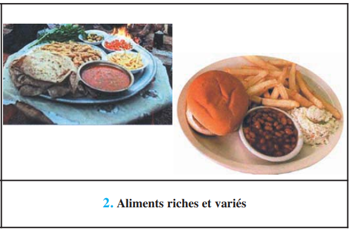
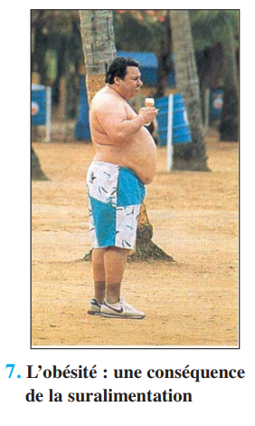
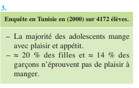
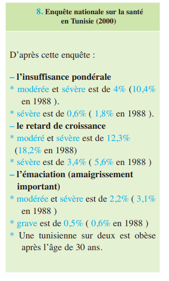
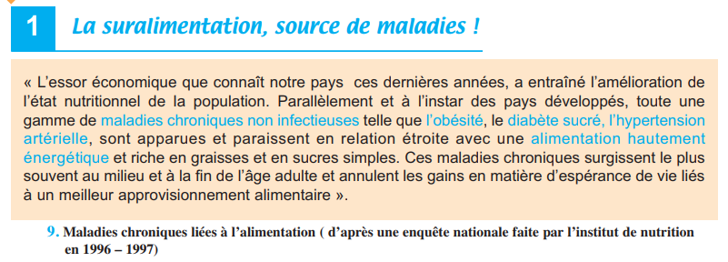
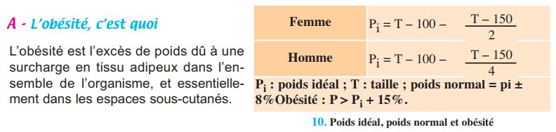
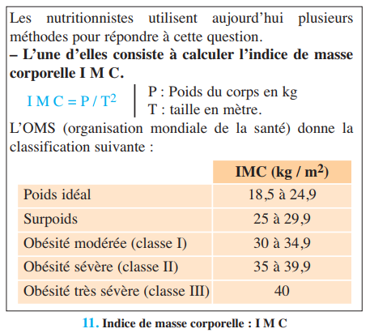
2. L'IMC — Indice de Masse Corporelle
L'IMC (Indice de Masse Corporelle) est l'outil de référence pour évaluer la corpulence. Il se calcule par la formule : IMC = Poids (kg) ÷ Taille² (m²). L'OMS a établi une classification internationale qui permet de situer chaque individu.
🧮 Calculateur IMC interactif
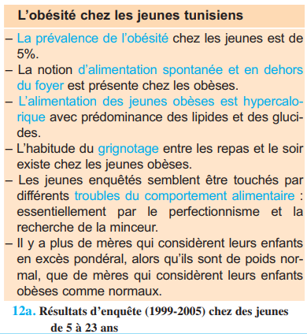
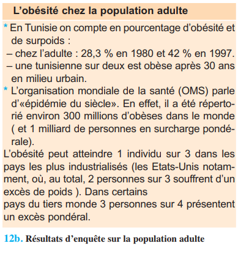
3. Complications liées à l'obésité
Les personnes dont l'IMC dépasse 30 présentent des risques élevés de développer : diabète, maladies cardiovasculaires (infarctus, HTA, athérosclérose), insuffisance respiratoire, arthrose, et certains cancers (prostate, côlon, sein, utérus).
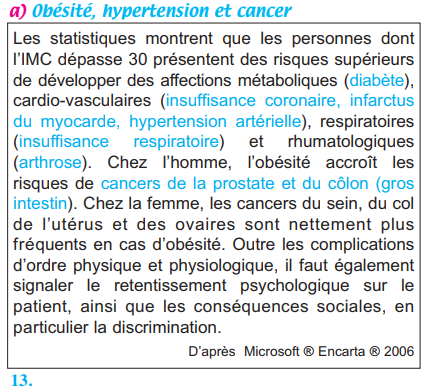
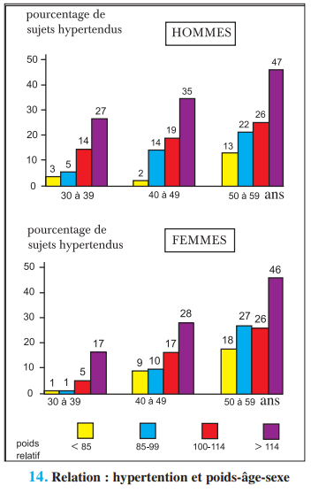
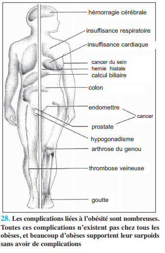
4. Lutter contre l'obésité
Plusieurs moyens permettent de lutter contre l'obésité : activité physique régulière (30 min de marche/jour), alimentation méditerranéenne (huile d'olive, légumes, fruits), réduction des graisses animales, et suppression du grignotage.
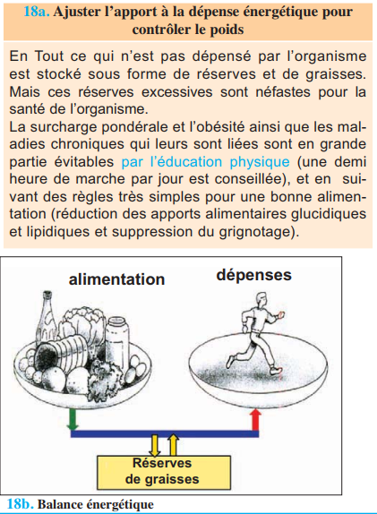
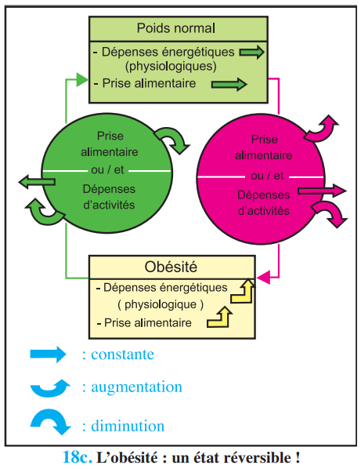
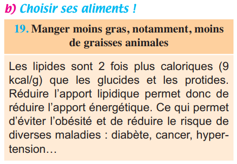
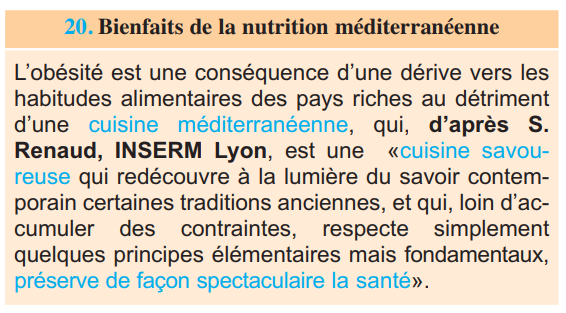
1. L'obésité est définie par un IMC .
2. En Tunisie, le pourcentage d'obésité et de surpoids chez l'adulte est passé de 28,3% en 1980 à .
3. Les complications de l'obésité comprennent .
L'athérosclérose : quand les artères s'encrassent
Imaginez une canalisation qui s'encrasse progressivement... L'athérosclérose est exactement cela : des dépôts graisseux (cholestérol) forment des plaques d'athérome sur les parois internes des artères. Ces plaques réduisent le diamètre des vaisseaux et diminuent leur élasticité. Les conséquences peuvent être dramatiques.
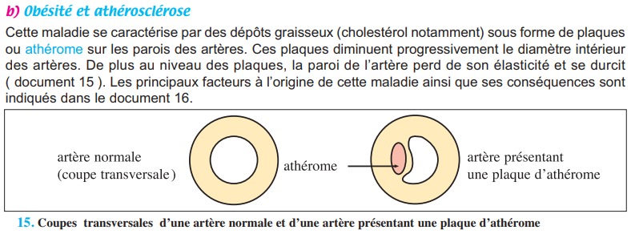
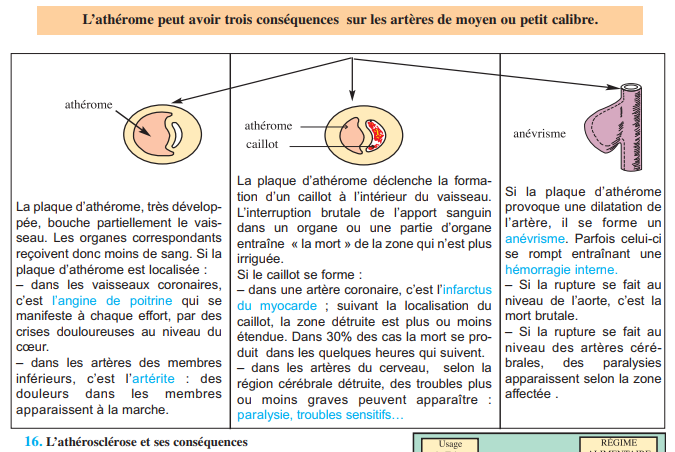
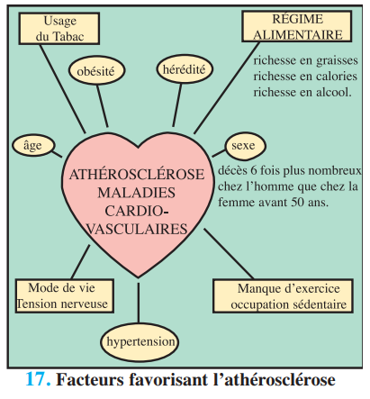
| Localisation des plaques | Conséquence |
|---|---|
| Artères coronaires (cœur) | Angine de poitrine → Infarctus du myocarde |
| Artères cérébrales | AVC → paralysies |
| Artères des membres inférieurs | Artérite → douleurs à la marche |
| Aorte (dilatation) | Anévrisme → rupture mortelle |
Facteurs contrôlables : alimentation riche en graisses saturées, tabac, sédentarité, obésité, hypertension, diabète.
Prévention : réduire les graisses animales, pratiquer une activité physique, maintenir un poids normal.
1. L'athérosclérose est caractérisée par .
2. Une plaque d'athérome dans les artères coronaires peut provoquer .
Quand l'alimentation ne couvre pas les besoins
Selon la FAO et l'UNICEF, 1 habitant de la Terre sur 3 ne mange pas à sa faim. La sous-alimentation est particulièrement grave chez les enfants. Les carences alimentaires peuvent être énergétiques (marasme) ou qualitatives (manque d'un nutriment spécifique).
A — Maladies de carence protéique
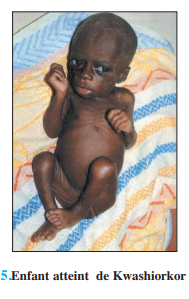
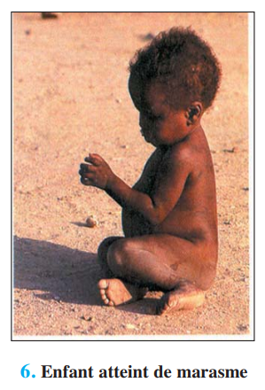
| Maladie | Cause | Signes cliniques |
|---|---|---|
| Kwashiorkor | Carence en protides | Œdèmes, lésions cutanées, dépigmentation, retard de croissance |
| Marasme | Sous-alimentation générale | Poids < 60% du normal, fonte musculaire extrême |
| Anorexie mentale | Carence volontaire | Amaigrissement sévère, carences multiples |
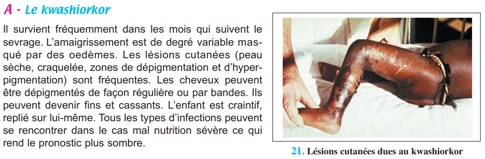
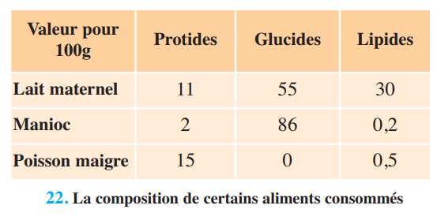
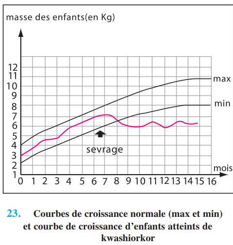
B — Avitaminoses : quand les vitamines manquent
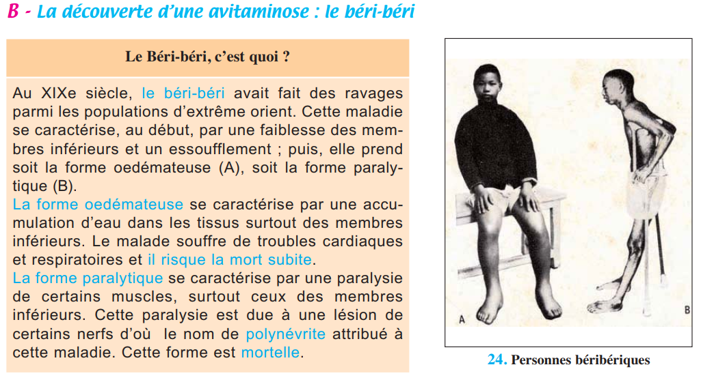
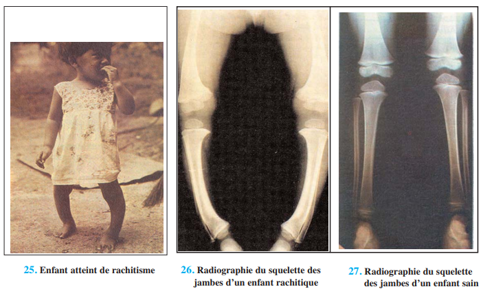
Le béribéri est une avitaminose historique. Au XIXe siècle, un médecin japonais constata que les marins nippons (riz poli) étaient atteints alors que les marins européens ne l'étaient pas. L'expérience décisive : des poules nourries de riz décortiqué développent les mêmes symptômes. Conclusion : le béribéri est dû à une carence en vitamine B1 (thiamine), présente dans l'enveloppe du riz mais éliminée par le polissage.
| Vitamine | Maladie de carence | Sources alimentaires |
|---|---|---|
| B1 (thiamine) | Béribéri | Céréales complètes, légumes |
| D (calciférol) | Rachitisme | Lait, œufs, poisson, soleil |
| C (acide ascorbique) | Scorbut | Fruits frais, légumes |
| A (rétinol) | Cécité nocturne | Légumes verts, lait, foie |
C — Carences en éléments minéraux
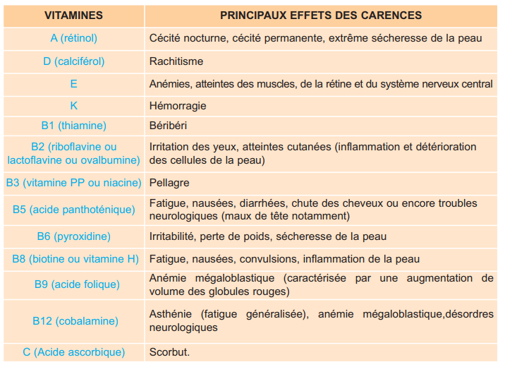
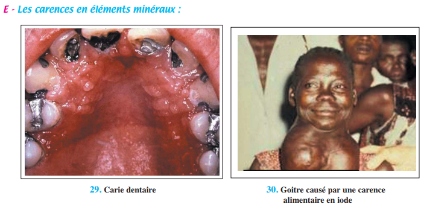
| Minéral | Conséquences de la carence | Sources |
|---|---|---|
| Fer (Fe) | Anémie, fatigue, baisse immunitaire | Viandes, poissons, légumineuses |
| Calcium (Ca) | Rachitisme, caries, troubles neuromusculaires | Lait, fromage |
| Iode (I) | Goitre, nanisme, troubles mentaux | Sel iodé (enrichi depuis 1984 en Tunisie) |
| Magnésium (Mg) | Stress, crampes, insomnies | Amandes, céréales complètes |
| Fibres | Cancer du côlon, MCV, constipation | Son de blé, légumineuses, légumes |
1. Le kwashiorkor est une maladie de carence en .
2. Le béribéri est causé par une carence en .
3. La carence en iode provoque .
1 La suralimentation (p.16)
La suralimentation correspond à une alimentation dont les apports énergétiques . Associée à la , elle conduit à l'. L'IMC de l'obèse est .
2 Complications de l'obésité (p.16)
Les personnes obèses présentent des risques élevés de : . L'athérosclérose est due à des .
3 Maladies de carence protéique (p.16)
Le kwashiorkor est la conséquence d'un régime alimentaire carencé en . Le marasme s'observe essentiellement lors de la première année de vie, avec un poids .
4 Avitaminoses (p.17)
Les carences vitaminiques sont responsables de nombreux dysfonctionnements. Le béribéri est dû à une carence en . Le rachitisme est dû à une carence en . Le scorbut est dû à une carence en .
5 Carences minérales (p.17-18)
La carence en fer se traduit par une . La carence en iode entraîne un . Pour y remédier, la Tunisie a enrichi le sel de cuisine en iode depuis .
6 Conclusion (p.18)
La malnutrition désigne à la fois une alimentation excessivement abondante ou et une alimentation insuffisante ou . L'étude des conséquences met en évidence la nécessité d'une .
✏️ Ex.1 — QCM du manuel (p.19)
| 1. Une personne est dite mal nourrie lorsqu'elle : | |
| 2. L'obésité : | |
| 3. Le marasme : | |
| 4. Le kwashiorkor : | |
| 5. Le rachitisme : | |
| 6. Le béribéri : |
👩 Ex.2 — Mme X et sa fille (p.19)
Explication : Mme X est en situation de malnutrition parce que . Sa fille est élève en 3ème année, elle est .
🧮 Ex.4 — Le sucre et les adolescents (p.19)
a) Quantité de sucre consommée par jour = . Par semaine = . Par an = .
b) Équivalent en morceaux par jour = .
c) Énergie fournie quotidiennement = . Soit l'équivalent de .
Exercice principal + bonus d'approfondissement par objectif.
La malnutrition englobe . Elle est à l'origine de .
Associer : Obésité → . Kwashiorkor → . Béribéri → .
Suralimentation : apports . Sous-alimentation : apports .
IMC = . Obésité si IMC . Poids idéal si IMC entre .
Carence en fer → . Carence en iode → . Carence en calcium → .
Pour prévenir l'obésité : . Pour prévenir le goitre en Tunisie : .
🃏 Flashcards — Paragraphes à trous
✏️ QCM — Manuel (p.19) + Questions BAC
Questions 1-6 (p.19) + compléments